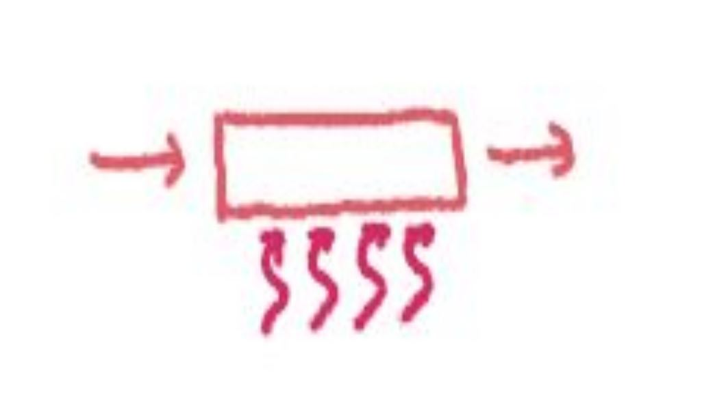

Process Load is the heat transfered to the item you are trying to process. To estimate process load you will need to know the specific heat of the material, temperature temperature change desired and the cycle time.
If there is a change of state (i.e. from solid to liquid, liquid to gas) additional calculations are necessary. These involve the latent heat of fusion (melting) or heat of fusion vaporization.
